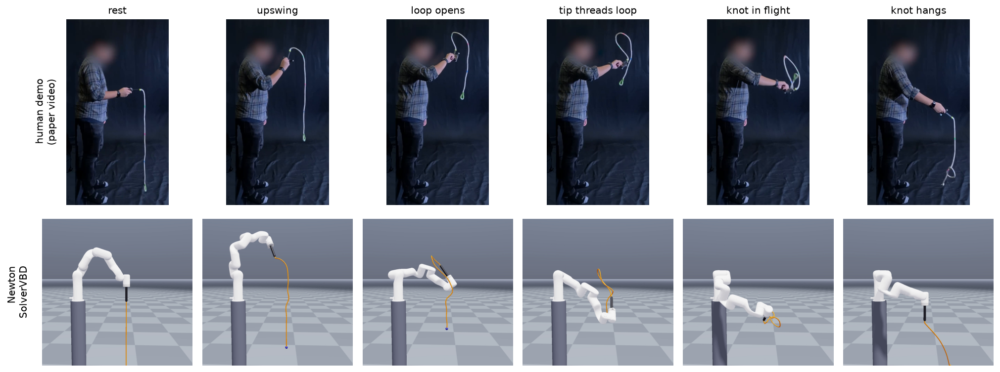
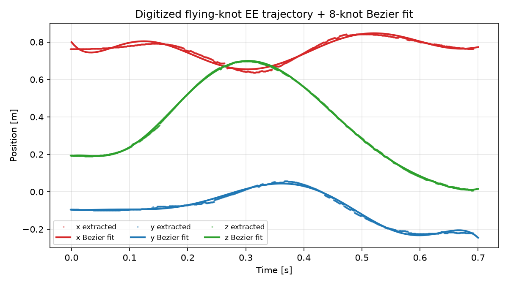
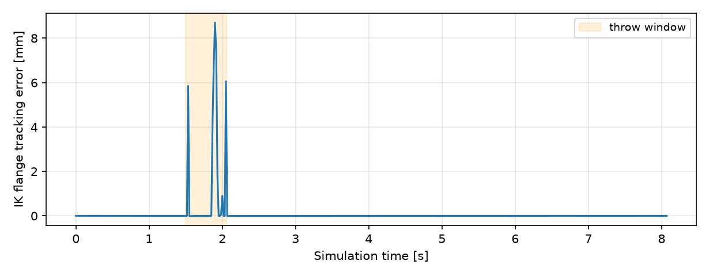
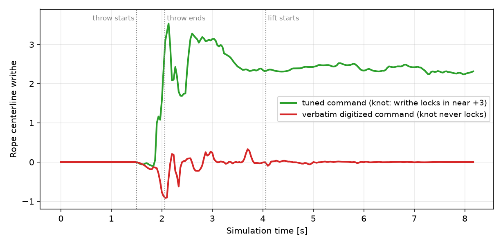

Flying Knots in Newton
Replicating the mid-air overhand "flying knot" of Suresh & Atkeson
(flying-knots.github.io, arXiv:2602.21302) in Newton
with SolverVBD cable joints: an xArm7 bolted to a fixed pedestal replays the paper's
throw trajectory and a simulated weighted rope ties itself into an overhand knot in under a second of
motion.
Generated 2026-07-03 from CUDA runs on NVIDIA L40; revised 2026-07-03 with a
fixed pedestal (see Revision). Newton branch flying-knots off
origin/main 31b06fe0.
Result
Full sequence, real time: settle → 0.56 s throw → free flight → slow lift. The rope root replays the digitized end-effector command of the paper; the xArm7 tracks the same trajectory through Newton's IK module and is animated kinematically. The knot cinches against the tip weight during the lift and remains in the hanging rope.
Throw at 4× slow motion, side view: the rope is thrown over the top, opens into a loop, and the weighted tip whips through the loop — the paper's "collision" critical point.
Close-up of the lift phase: the loose knot travels down the rope and tightens against the weighted tip.
Knot-tracking camera, 4× slow motion: the camera follows the smoothed centroid of the rope's self-contact cluster, keeping the evolving knot centered through the whole tying sequence — loop formation, the tip threading it, and the knotted rope falling to the floor. (The static side view above loses the knot below the frame as the rope falls; here the knot cluster stays fully in view for all 120 recorded frames, max |NDC| 0.81.)

What the paper released, and what it didn't
The public code (flying_knots_public)
contains the full learning pipeline (mocap capture, IK, task-level ILC, three rope models) but ships
no recorded demonstrations or commands — all trial data lives under a local
$FLYING_KNOT_DATA directory that was never published, and the repo has no releases. The
project site hosts videos only.
The usable quantitative record of the throw is the paper's follow-through figure: the executed end-effector x/y/z position trajectory of the overhand throw over 0.7 s. I digitized the three curves by color extraction, calibrated the axes from the tick marks, and refit the paper's own command parametrization (Appendix D): an 8-control-point Bézier per axis. Fit residual is below 3.6 cm everywhere (below 1.5 cm on z, the dominant axis). The figure plots both the demonstration and the learned command; they differ by a few centimeters, and the extraction blends them where they overlap.

Physical parameters come from the paper: rope 1 (#10 sash spot cord) is 1.1 m long, 9 mm diameter, 0.040 kg/m, with an affixed end weight; the handle is 15 cm flange-to-tip; the command space is 10-DOF (7 arm joints + 3 base translations); the initial hand height must let the rope dangle freely (zmin = 1.2 m).
Newton scene
- Rope:
ModelBuilder.add_rod— 36 capsules over 1.1 m (5 mm radius), coupled by cable joints, simulated bySolverVBD(10 iterations, 32 substeps at 60 FPS). Capsule density reproduces the paper's 0.040–0.05 kg/m linear density; a sphere on the last capsule is the end weight. Rope self-collision and rope–ground contact are active (rigid_contact_historyon) — the knot is a self-contact structure. - Driving: the rope's root capsule is kinematic and follows the Bézier command, exactly mirroring the paper's rope model, where the fingertip position drives the first rope node through a distance constraint. The root orientation blends from "hanging" to "trailing the hand velocity" with twist-free quaternion transport.
- Robot: the paper's xArm7 URDF (vendored from their repo, gripper and ROS cruft
stripped) bolted to a fixed pedestal (static world geometry; the rope can rest against
it). Newton's
newton.ikLM solver tracks two position objectives per frame — flange and handle tip — with the 7 arm joints only, which aligns the handle axis without constraining tool twist. The arm is animated kinematically (all links zero-mass; per-substep transforms interpolated from the 60 Hz IK solution), so it visualizes the commanded motion while the rope physics is driven by the same trajectory.

Revision: keeping the pedestal fixed
The first version of this report gave the arm the paper's 3-DOF translating base (their Bézier command is 10-DOF: 7 joints + 3 base translations) as a D6 joint with ±0.2 m limits, and parented the pedestal to the base link. The IK solver exploited this freely: the solved base trajectory slid 0.25 m in x and rail-to-rail 0.40 m in y and z during the throw, so the whole robot — pedestal included — visibly flew around the scene. Physically plausible for their gantry-style setup, but it read as an unrealistic floating robot.
The fix removes the base joint entirely (the URDF root is welded to the world) and instead
searches for a mount pose from which the fixed-base arm can reach the entire command:
candidate mounts are pruned by a workspace annulus around the shoulder, then scored by solving the full
7-DOF IK schedule (scripts/flying_knot/fixed_base_search.py). The selected mount
(x = 0.30, y = −0.20, flange height 1.30 m) tracks the whole
trajectory with mean 0.03 mm / max 13.5 mm flange error (the movable base achieved
8.7 mm max — the fixed base costs 5 mm at one whip frame). The pedestal is now static
world geometry with collision enabled, so the rope rests against it rather than passing through. Enabling
that contact exposed a real failure mode — the loose knot could snag on the column and be stripped
off while the rope is lifted (4/8 with-arm trials) — so the final lift now drifts 0.12 m away
from the pedestal, restoring 7/8.
scripts/flying_knot/verify_fixed_base.py steps the full
animation and asserts the base link's world transform never changes and the pedestal is static geometry
(shape parent body −1). Result: max transform drift 0.000e+00 over 484
frames. The same assertion now runs inside the example's test_final() on every test
execution. The rope simulation itself is untouched by this change — the rope root replays the same
command — so the standalone success statistics remain valid; the with-arm trials below were re-run
on the fixed-base scene.
Tuning: replaying the demonstration is not enough
Replaying the digitized command verbatim on the paper's rope-1 parameters (0 knots) reproduces the paper's own headline observation: direct tracking of a demonstration fails, because the rope dynamics differ between the demonstrator's rope and the executing system. In the paper the gap is human→robot hardware; here it is real rope→VBD cable. Their answer is task-level ILC over the command; mine is a parameter search over command timing/amplitude and rope properties, playing the same role offline.
A broad sweep (54 runs) showed the failure mode clearly: the rope coils to a transient writhe of ±3 and the loop collapses before the weighted tip threads it, or the loose knot slides off the free end during flight. Two knobs move the collision point decisively: a slightly faster throw (time scale 0.75–0.8, i.e. 0.53–0.56 s instead of 0.7 s) and a heavier tip weight (50–70 g vs. the paper's 18 g) that carries momentum through the loop and later cinches the knot.
Failure mode, 4× slow motion: the verbatim digitized command with the paper's exact rope-1 parameters (18 g tip, 0.7 s throw). The rope coils but the tip never threads the loop, and the rope lands unknotted.
Success, same view: with the tuned command (0.56 s throw, 50 g tip) the tip carries through the loop and the knot survives the landing.

Success rates
Because VBD contact resolution is not bitwise deterministic across runs, single successes are meaningless near the critical manifold — the same parameters can knot in one run and miss in the next. All configurations were therefore scored by repeated trials (the paper analogously reports a 40-trial robustness evaluation). Success = final |writhe| > 2 and end-to-end/arc-length ratio < 0.95 in the hanging rope.
| Throw time scale | Tip mass [g] | Bend stiffness [N·m/rad] | Success |
|---|
The success basin is sharp — neighboring configurations flip from 5/5 to 0/5 with a 10 g tip change — which matches the paper's premise that the flying knot is a precision event requiring iteration-level correction rather than robust open-loop replay. The selected default (time scale 0.8, 50 g tip, bend stiffness 2×10−3) achieved 17/20 standalone and 7/8 in the full fixed-base arm example.
In-flight cable PRs
This branch runs on plain origin/main (31b06fe0). JC Chang's (jumyungc)
merged VBD-cable work is already in that baseline and this example depends on it (capsule COM origin
#2670, absolute VBD damping
#2877, rigid-contact energy fix
#3147). His open PRs were evaluated but
not required: #3122
(split cable stretch/shear + bend/twist constraints) was additionally merged into a scratch branch and re-scored —
it shifts the cable dynamics enough to move the tuned command off the knotting manifold (the loop still
forms, max writhe 3.2, but the tip no longer threads it), and a small retune restores full success;
#3180 (separate rest/initial poses) is
unnecessary because the rope starts at its rest shape; and
#3316 (masked rigid resets) targets
resets, which this example does not use.
| Configuration | Champion success | Notes |
|---|---|---|
origin/main 31b06fe0 | 17/20 | report baseline |
| + PR #3122, same command | 0/10 | loop forms (max writhe 3.2) but tip misses; knot never locks |
| + PR #3122, retuned (time scale 0.78, tip 45 g) | 10/10 | one-step retune inside the same search grid recovers the knot |
Verifying the knot
Success is scored topologically on the rope centerline, not visually:
- Writhe via the discrete Gauss integral (Klenin & Langowski segment-pair solid angles). A tightened open overhand knot scores |Wr| ≈ 2.5–3.4; unknotted slack rope stays near 0. Unit-tested against closed/open trefoils, circles, and slack curves.
- Length deficit: an overhand knot consumes rope, so the hanging end-to-end distance drops to ≈0.80–0.85 of arc length after the lift tightens it against the tip weight (unknotted: >0.95). This mirrors the paper's success definition — a knot that survives in the hanging rope.
- Crossing count of the projected centerline (≥3 for a trefoil projection), reported for confirmation.
The example's test_final() asserts these criteria when run with --expect-knot.
Deviations from the paper
- Command source: digitized from a published figure (position only, solid/dashed curves blended), not the released mocap. Handle orientation is reconstructed heuristically since the paper's rope model is position-driven anyway.
- Command tuning: 20% faster throw and 50 g tip weight (paper: 18 g for rope 1). The VBD cable at this discretization needs a more energetic throw than the real cotton cord; the paper compensates per-rope with ILC and per-rope end weights up to 80 g.
- Arm is kinematic and arm–rope collision is disabled; the rope interacts with itself, the ground, and the pedestal column, as in the paper's particle model. The loop passes close to the wrist during the throw. The final lift drifts 0.12 m away from the pedestal so the tightening knot cannot snag on the column.
- Rope discretization: 36 capsules (3 cm segments) versus 11 mocap markers in their model; the tight knot bundle spans ~8 segments, so finer discretization would sharpen the knot geometry at higher cost.
- No learning loop: this is a tuned open-loop replay; the ILC algorithm itself was not ported.
newton.ikwithIKJacobianType.ANALYTICraises CUDA illegal-memory-access for a 10-coordinate model with a 3-DOF D6 base joint (used in the first version of this scene);AUTODIFFworks. Worth a minimal repro/issue.- VBD rigid contact outcomes are not run-to-run deterministic, which matters for near-critical contact events like knot formation; repeated-trial scoring was required.
Modelhas no public body-label lookup (ModelBuilder.body_labelmust be read beforefinalize()).
Reproduction
# Newton branch: flying-knots (worktree off origin/main 31b06fe0)
uv run -m newton.examples cable_flying_knot # interactive, knots by default
uv run -m newton.examples cable_flying_knot --viewer null --test --expect-knot
uv run python scripts/flying_knot/digitize_fttraj.py # rebuild the command from the figure
uv run python scripts/flying_knot/sweep.py --grid basin --repeats 3 # success-rate sweeps
uv run python scripts/flying_knot/record_video.py out.mp4 # ViewerGL headless rendering (xvfb)
uv run python scripts/flying_knot/record_video.py knot.mp4 --camera track \
--start 1.6 --end 3.6 --slowmo 4 --require-knot --verify-in-frame # knot-tracking slow-mo
uv run python scripts/flying_knot/fixed_base_search.py # base-motion diagnosis + mount search
uv run python scripts/flying_knot/verify_fixed_base.py # probe: base/pedestal must not move
Assets: xArm7 URDF + meshes are read from a clone of
flying_knots_public (override with FLYING_KNOTS_XARM_DIR); without it the example
runs handle-only. Videos rendered with ViewerGL offscreen capture piped to ffmpeg.